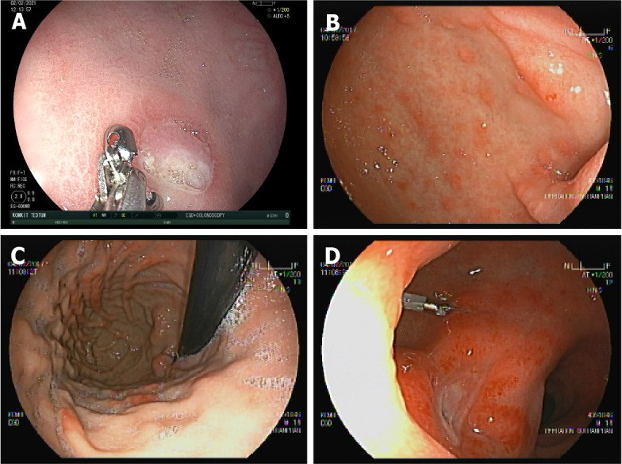
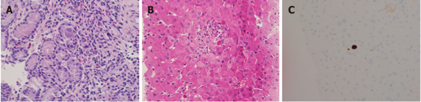

1918 — Nhiễm CMV sau ghép gan ở trẻ: viêm gan CMV vs thải ghép cấp, ngưỡng tải lượng và khi nào giảm ức chế miễn dịch
Tags: pattern:viem-gan-sau-ghep pattern:tang-transaminase pattern:day-thanh-ruot pattern:loet-niem-mac vung:gan vung:duong-mat vung:ruot vung:phoi protocol:PCR-CMV protocol:noi-soi-tieu-hoa protocol:sinh-thiet-gan protocol:MRCP score:CMV-DNA incidentaloma:khong
Mức chắc chắn (certainty): tổng hợp y văn (literature synthesis) — ghép tổng quan về CMV sau ghép gan ở trẻ (World J Hepatol 2022, PMC8891677), đoàn hệ 96 trẻ ghép gan (Viruses 2023, PMC10222744), phân tích gộp 27 nghiên cứu/6.308 ca ghép tạng (BMC Infect Dis 2025, PMC12482134) và ca nguyên văn có ảnh nội soi + mô học (PMC8891677). Không có ca do nhóm tự chụp.
Câu hỏi thực hành: bé trai 8 tháng tuổi, ghép gan 35 ngày vì teo đường mật, D+/R− CMV. Sốt 38,5°C 3 ngày, vàng da tăng, ALT 180 U/L, WBC 2,8 × 10⁹/L, tiểu cầu 90 × 10⁹/L, CMV DNA 3.200 IU/mL. Siêu âm: mảnh ghép đều, không giãn đường mật, động mạch gan bình thường. Bác sĩ hỏi: "Đây là viêm gan CMV hay thải ghép cấp? Có cần sinh thiết không? Giảm ức chế miễn dịch hay tăng?" Bài chốt năm quyết định: (1) trẻ ghép gan D+/R− có tỉ lệ nhiễm CMV 44–65% nếu không dự phòng, và 63% có antigenemia dù đã điều trị tiên phát; (2) CMV làm tăng nguy cơ thải ghép cấp — gộp 27 nghiên cứu: OR 2,02; riêng gan OR 4,43 (2,20–8,92); (3) viêm gan CMV và thải ghép cấp KHÔNG phân biệt được bằng xét nghiệm gan/hình ảnh — phải sinh thiết + nhuộm hóa mô miễn dịch; (4) bệnh xâm lấn mô có thể có tải lượng máu rất thấp hoặc không phát hiện được, nên PCR âm không loại trừ; (5) bước đầu tiên khi có tải lượng đáng kể là GIẢM ức chế miễn dịch, rồi mới kháng virus.
1. Tổng quan bệnh học – cơ chế hình ảnh: vì sao CMV vừa gây viêm gan vừa "giả thải ghép"
- Bản chất virus: CMV (cytomegalovirus, HSV-5) thuộc họ Herpesviridae, tiềm ẩn suốt đời trong tế bào dòng tủy; khi ức chế miễn dịch (đặc biệt lympho T CD4/CD8) suy giảm, virus tái hoạt hoặc lây mới từ mảnh ghép. Ở trẻ, phần lớn là nhiễm tiên phát vì chưa từng tiếp xúc — đây là lý do trẻ có tỉ lệ bệnh cao hơn người lớn.
- Dịch tễ định lượng:
- Huyết thanh dương tính ở phụ nữ tuổi sinh sản 45–100% tùy vùng (PMC8891677).
- Loạt 146 ca ghép gan: nhiễm CMV sau ghép 71,4% ở trẻ so với 33,4% ở người lớn; thời gian tới viremia trung bình 11,5 ngày ở trẻ so với 30 ngày ở người lớn (PMC8891677).
- Không dự phòng: D+/R− nhiễm 44–65%, D−/R− chỉ 1–2%; trẻ nhỏ 44–65% trong 6 tháng (PMC8891677).
- Có điều trị tiên phát (Nhật Bản): antigenemia 63% D+/R−, 38% D+/R+, 11% D−/R+, 6% D−/R−; bệnh CMV 11% / 2% / 0% / 6% tương ứng (PMC8891677).
- Nhiễm muộn sau khi ngừng dự phòng: 10,5% nhiễm và 4,4% bệnh (PMC8891677).
- Đoàn hệ 96 trẻ ghép gan (Anh): 35,4% nhiễm CMV, trung vị 42 ngày sau ghép (IQR 30,75–66); D+/R− là yếu tố nguy cơ độc lập (p = 0,013), D−/R− bảo vệ (p = 0,04) (PMC10222744).
- TẠI SAO CMV gây tổn thương gan — cơ chế mô học: CMV nhiễm tế bào nội mô và tế bào biểu mô ống mật, gây viêm và phù nhu mô, sau đó hoại tử tế bào gan từng ổ và áp-xe vi mô bạch cầu trung tính. Trên hình ảnh, điều này chỉ tạo ra bất thường không đặc hiệu: gan to, phù quanh khoảng cửa (periportal halo), giảm đậm độ nhu mô, dày thành túi mật — không có dấu hiệu nào đủ chẩn đoán.
- TẠI SAO hình ảnh KHÔNG phân biệt được với thải ghép cấp: cả hai đều là viêm nhu mô + phù khoảng cửa; trên siêu âm/CT/MRI, viêm gan CMV, thải ghép cấp và nhiễm adenovirus/EBV đều có thể chỉ là gan to + phù quanh cửa. Điểm khác biệt nằm ở mô học (thể vùi trong nhân/tế bào chất, hóa mô miễn dịch CMV dương) và PCR mô, không ở HU hay mm.
- TẠI SAO tải lượng máu không tương ứng với mức bệnh: trong bệnh xâm lấn mô (viêm gan, viêm ruột), virus khu trú trong mô, có thể không có hoặc rất ít DNA trong máu; hiệp hội ghép tạng khuyến cáo không dùng PCR huyết thanh để quyết định ngừng thuốc khi có bệnh mô học — phải dựa vào lâm sàng + mô học (PMC8891677).
- TẠI SAO CMV làm tăng thải ghép: CMV điều hòa tăng phân tử MHC lớp I/II trên tế bào nội mô mảnh ghép, tăng cytokine viêm, và làm rối loạn tế bào T điều hòa → mảnh ghép "dễ thấy" hơn với hệ miễn dịch. Gộp 27 nghiên cứu, 6.308 ca: thải ghép cấp OR 2,02 (95% CI 1,64–2,49); gan OR 4,43 (2,20–8,92), thận 2,22 (1,70–2,89), phổi 1,38 (1,01–1,90) (PMC12482134).
- Vì sao trẻ < 18 tháng khó xác định huyết thanh: IgG mẹ truyền có thể còn dương tính tới 18 tháng; ở trẻ < 18 tháng phải dùng IgG + PCR/cấy nước tiểu–nước bọt, không dựa IgG đơn thuần (PMC8891677).
- Định nghĩa "hội chứng CMV" (để không gọi nhầm): có DNA CMV trong máu + ≥ 2 trong các tiêu chí: sốt > 38°C ≥ 2 ngày trong 4 ngày, mệt mới, giảm bạch cầu/trung tính 2 lần, ≥ 5% lymphocyte không điển hình, giảm tiểu cầu, transaminase > 3 lần giới hạn trên (PMC8891677).
2. Mẫu hình + chẩn đoán phân biệt theo vị trí (Gamut)
- Theo CƠ QUAN bị ảnh hưởng (CMV "đi đâu"):
- Gan (viêm gan CMV): tăng transaminase, vàng da, gan to; không giãn đường mật; mô học có thể vùi và áp-xe vi mô bạch cầu trung tính; IHC CMV dương.
- Đường tiêu hóa (viêm thực quản/dạ dày/ruột): đau bụng, tiêu chảy, xuất huyết tiêu hóa, thiếu máu; nội soi: loét, niêm mạc đỏ phù, chảy máu; sinh thiết là chốt.
- Phổi (viêm phổi CMV): ho, khó thở, giảm oxy máu; CT: kính mờ lan tỏa, đông đặc mảng, có thể nốt nhỏ; không đặc hiệu, phải loại trừ Pneumocystis, adenovirus, nấm.
- Mắt (viêm võng mạc CMV): hiếm ở ghép gan nhưng mù nếu bỏ sót; soi đáy mắt thấy xuất tiết dạng "bánh pizza" dọc mạch; không dùng CT.
- Thần kinh (viêm não – màng não – tủy): sốt + tri giác thay đổi + co giật; MRI: tăng tín hiệu quanh não thất, màng não; chẩn đoán bằng PCR dịch não tủy.
- Theo VỊ TRÍ tổn thương trong gan (gamut hình ảnh):
- Đường mật: hẹp miệng nối, rò mật, ứ mật — giãn đường mật trên siêu âm/MRCP → nghĩ biến chứng mổ, không phải CMV.
- Mạch máu: hẹp/tắc động mạch gan, huyết khối tĩnh mạch cửa — Doppler bất thường → nghĩ mạch.
- Nhu mô lan tỏa: viêm gan CMV, thải ghép cấp, EBV/PTLD, adenovirus, độc tính thuốc — không giãn đường mật, Doppler bình thường.
- Ổ khu trú: áp-xe, u, PTLD — cần CT/MRI có cản quang.
- Theo BỆNH CẢNH "sốt sau ghép gan" (DDx theo thời gian):
- < 30 ngày: nhiễm khuẩn mổ, nấm, herpes simplex, CMV sớm (trung vị 42 ngày nhưng có thể sớm hơn), thải ghép cấp.
- 1–6 tháng: CMV, EBV/PTLD, Pneumocystis, adenovirus, thải ghép cấp, hẹp đường mật.
- > 6 tháng: cộng đồng (hô hấp, tiêu hóa), CMV muộn sau ngừng dự phòng, PTLD, thải ghép mạn.
3. Bảng so sánh phân biệt (ma trận đối chiếu)
| Thực thể (entity) | Hình ảnh / xét nghiệm điển hình | Chốt vào (rule-in) | Chốt loại (rule-out) | Gợi ý xác nhận |
|---|---|---|---|---|
| Viêm gan CMV | Gan to, phù quanh cửa, không giãn đường mật; ALT tăng; CMV DNA máu có thể thấp | Thể vùi CMV + IHC dương trong mô gan | IHC âm + không có thể vùi (không loại trừ nếu lấy mẫu kém) | Sinh thiết gan + IHC CMV + PCR mô |
| Thải ghép cấp (ACR) | Gan to, phù quanh cửa; ALT/ALP tăng; không có thể vùi | Thâm nhiễm lympho khoảng cửa + viêm nội mô tĩnh mạch + ống mật (phân độ Banff) | Có thể vùi CMV/IHC dương → CMV là nguyên nhân chính | Sinh thiết + phân độ Banff; đáp ứng corticoid |
| Hẹp miệng nối đường mật | Giãn đường mật trong gan, chỗ hẹp trên MRCP; bilirubin/ALP tăng | Giãn đường mật + chỗ hẹp | Đường mật không giãn | Siêu âm Doppler + MRCP; ERCP/PTBD |
| Hẹp/tắc động mạch gan | Doppler: RI thấp, mất dòng tâm trương, tăng tốc độ; CTA xác nhận | Bất thường Doppler + CTA | Doppler bình thường 3 mạch | CTA; can thiệp nong/stent |
| PTLD do EBV | Khối/hạch, có thể hoại tử, ngấm thuốc; EBV DNA cao | Mô học tăng sinh lympho + EBV dương | EBV DNA âm + không có khối | Sinh thiết; PET-CT; EBV DNA |
| Nhiễm adenovirus | Viêm gan/viêm ruột, sốt; có thể hoại tử lan tỏa | PCR adenovirus dương trong máu/mô | PCR âm | PCR; sinh thiết |
| Độc tính thuốc (MMF, tacrolimus) | Tăng transaminase, không sốt, không thể vùi | Cải thiện sau giảm/đổi thuốc | Sốt + CMV DNA tăng → nghĩ nhiễm | Thử ngừng thuốc có kiểm soát |
| Nhiễm khuẩn huyết / áp-xe | Ổ dịch, khí trong mô, đậm độ dịch trên CT | Cấy máu/ổ dương tính | Cấy âm + không ổ | Cấy, siêu âm/CT |

Nội soi: (A, B) bé 13 tháng, D+/R−, thiếu máu nặng 3 tháng sau ghép; (C, D) bé 14 tuổi, nôn ra máu 2 tháng sau ghép. Niêm mạc đỏ, phù, loét rải rác — hình ảnh không đặc hiệu, chẩn đoán phải bằng sinh thiết. Nguồn: World J Hepatol 2022, PMC8891677, CC BY-NC 4.0.4. Protocol chẩn đoán – điều trị – dự phòng
- Trước ghép — phân tầng nguy cơ (bắt buộc):
- Người nhận: IgG CMV; nếu < 18 tháng thì thêm PCR/cấy nước tiểu–nước bọt vì IgG mẹ có thể còn dương.
- Người cho: IgG CMV; < 18 tháng mà IgM dương thì coi như dương.
- Phân nhóm: D+/R− = nguy cơ cao; D−/R+ = trung bình; D+/R+ và D−/R− = thấp.
- Theo dõi sau ghép:
- QNAT (quantitative nucleic acid testing) huyết tương — cùng một loại mẫu, cùng một assay, báo theo IU/mL chuẩn WHO.
- Hàng tuần trong 12 tuần đầu; sau đó hàng tháng tới 12 tháng ở nhóm nguy cơ trung bình/cao, đặc biệt 3 tháng sau khi ngừng dự phòng (đỉnh CMV muộn).
- pp65 antigenemia là thay thế ở nơi không có PCR: ngưỡng tham khảo 5 tế bào dương/50.000 bạch cầu (Nhật Bản).
- Ngưỡng khởi trị tiên phát (pre-emptive) — không có ngưỡng chung, phải theo assay của trung tâm:
- Tham khảo: 500 copies/mL (Ấn Độ), 650 copies/mL (Ý), 5 pp65+/50.000 BC (Nhật).
- Nhóm D+/R−: 1.500 IU/mL huyết tương; D+/R+: 2.275 IU/mL hoặc 2.500 copies/mL; máu toàn phần 2.520–3.000 copies/mL; R+ 3.983 IU/mL (PMC8891677).
- Ngưỡng tiên lượng bệnh nặng ở người lớn ghép gan: 180 copies/mL (164 IU/mL) — dùng để tham khảo, không áp nguyên cho trẻ (PMC8891677).
- Điều trị (khi có bệnh hoặc tải lượng đáng kể):
- Bước 1 — giảm ức chế miễn dịch (đặc biệt khi bệnh nặng/tải lượng cao): giảm calcineurin inhibitor, cân nhắc bỏ MMF/azathioprine; đây là bước ưu tiên trước kháng virus (PMC8891677).
- Ganciclovir IV 5 mg/kg mỗi 12 giờ (điều chỉnh theo chức năng thận) là first-line cho bệnh nặng; valganciclovir uống tương đương ở bệnh nhẹ–trung bình.
- Liều valganciclovir: < 15 kg: 15 mg/kg/lần × 1 lần/ngày**; **> 15 kg: 500 mg/m²/lần × 1 lần/ngày; tối đa 900 mg/lần (PMC8891677).
- Thời gian: tối thiểu 2 tuần; với hội chứng CMV, kết thúc khi lâm sàng ổn + DNA < 200 IU/mL ở 1–2 mẫu cách 1 tuần; với bệnh xâm lấn mô, kết thúc theo lâm sàng + mô học, không dựa PCR máu (PMC8891677).
- Theo dõi trong điều trị: CBC, creatinin, điện giải mỗi tuần; QNAT hàng tuần; ngừng/đổi thuốc nếu giảm bạch cầu trung tính.
- Kháng thuốc:
- Nghi khi DNA còn dương sau ≥ 6 tuần tích lũy ganciclovir hoặc ≥ 2 tuần dùng liều đầy đủ; tỉ lệ 2–4% ở trẻ.
- Cơ chế: UL97 (ganciclovir) và UL54 (DNA polymerase); xét nghiệm gen trước khi đổi.
- Phương án: foscarnet 60 mg/kg mỗi 8 giờ hoặc 90 mg/kg mỗi 12 giờ; cidofovir 5 mg/kg/tuần × 2 liều rồi mỗi 2 tuần; kháng ganciclovir có thể dùng ganciclovir 7,5–10 mg/kg mỗi 12 giờ + foscarnet (PMC8891677).
- Dự phòng (prophylaxis):
- D+/R−: 3–6 tháng; nhóm khác 3–4 tháng hoặc 2–4 tuần + theo dõi.
- Thuốc: valganciclovir (liều như trên) hoặc ganciclovir IV; acyclovir kém hiệu quả hơn.
- Dự phòng chỉ TRÌ HOÃN nhiễm, không xóa bỏ → vẫn phải theo dõi sau khi ngừng (PMC10222744).
- Sơ đồ quyết định:
flowchart TD
A[Sốt + tăng transaminase sau ghép gan] --> B[Siêu âm Doppler + MRCP]
B --> C{Có giãn đường mật hoặc bất thường mạch?}
C -->|Có| D[Xử lý biến chứng mổ: hẹp miệng nối, hẹp ĐM gan]
C -->|Không| E[CMV QNAT + EBV PCR + adenovirus PCR]
E --> F{Tải lượng trên ngưỡng trung tâm?}
F -->|Không nhưng lâm sàng nặng| G[Sinh thiết gan + IHC CMV]
F -->|Có| H[Giảm ức chế miễn dịch trước]
G --> I{Thể vùi hoặc IHC dương?}
I -->|Có| H
I -->|Không| J[Cân nhắc thải ghép cấp: phân độ Banff, corticoid]
H --> K[Ganciclovir IV 5 mg/kg q12h hoặc valganciclovir]
K --> L[QNAT hàng tuần + CBC + creatinin]
L --> M{DNA âm 1-2 tuần và lâm sàng ổn?}
M -->|Chưa| N[Kiểm tra tuân thủ, liều, kháng thuốc UL97/UL54]
N --> L
M -->|Rồi| O[Theo dõi tiếp 3-12 tháng sau ngừng thuốc]
5. Biến thể bình thường và cạm bẫy
- "PCR âm là không có CMV" — SAI: bệnh xâm lấn mô có thể có DNA máu rất thấp/không phát hiện; nếu lâm sàng và mô học phù hợp, vẫn điều trị (PMC8891677).
- CMV và thải ghép cấp CÙNG TỒN TẠI: CMV làm tăng OR thải ghép 4,43 ở gan; thấy thể vùi không loại trừ ACR đồng thời. Điều trị cả hai, nhưng không tăng ức chế miễn dịch khi chưa kiểm soát virus.
- Tăng ức chế miễn dịch vì "nghĩ thải ghép" khi đang có CMV: có thể làm bùng phát CMV, thủng ruột, viêm phổi, tử vong. Khi chưa có mô học, giảm ức chế miễn dịch là hướng an toàn hơn.
- IgG dương ở trẻ < 18 tháng: có thể là IgG mẹ truyền, không phải nhiễm thật → phải kèm PCR/cấy.
- CMV muộn sau dự phòng: đỉnh ~3 tháng sau ngừng thuốc; không theo dõi là bỏ sót. Đoàn hệ Anh: 10,5% nhiễm muộn, 4,4% bệnh (PMC8891677).
- Giảm bạch cầu trên ganciclovir: dễ nhầm với ức chế tủy do MMF hoặc nhiễm khuẩn; kiểm tra công thức máu, nồng độ tacrolimus, CMV DNA, và cân nhắc G-CSF hoặc đổi sang foscarnet nếu nặng.
- Tổn thương gan "ổ khu trú" trên siêu âm ở trẻ ghép: có thể là PTLD hoặc áp-xe, không phải viêm gan CMV lan tỏa; cần CT/MRI có cản quang + sinh thiết.
- Không dùng hình ảnh để quyết định ngừng kháng virus: với bệnh đường tiêu hóa, phải nội soi + sinh thiết chứng minh hết mô học, không dùng PCR máu (PMC8891677).
- Co-nhiễm: EBV, HHV-6, adenovirus, nấm có thể cùng lúc; một xét nghiệm dương không loại trừ tác nhân thứ hai.
6. Tự lượng giá — Blind Quiz
Ca 1 — Bé 13 tháng, ghép gan vì teo đường mật, D+/R−, không dự phòng. 3 tháng sau ghép: thiếu máu nặng, phân đen. Nội soi dạ dày–tá tràng:
- Gợi ý: Hb giảm, không sốt cao, không tiêu chảy; siêu âm gan không giãn đường mật.
- Câu hỏi: (1) Mô tả tổn thương nội soi. (2) Ba chẩn đoán phân biệt? (3) Xét nghiệm nào chốt chẩn đoán? (4) Có cần kháng virus ngay không?
Bấm để hiện đáp án (findings + chẩn đoán)
- Findings: niêm mạc dạ dày–tá tràng đỏ, phù, loét rải rác, có ổ chảy máu; không có khối u.
- DDx: viêm dạ dày–ruột do CMV, loét do stress, loét do NSAID, bệnh dạ dày–ruột do EBV/adenovirus, bệnh Crohn (hiếm ở tuổi này).
- Chốt: sinh thiết niêm mạc + IHC CMV; PCR CMV mô; không dựa PCR máu vì bệnh mô có thể không có viraemia.
- Điều trị: giảm ức chế miễn dịch + ganciclovir IV 5 mg/kg q12h; theo dõi CBC/creatinin; nội soi kiểm tra lại nếu còn xuất huyết.
- Nguồn ảnh: World J Hepatol 2022, PMCID PMC8891677, CC BY-NC 4.0 — nguyên bản, không cắt/ghép.
Ca 2 — Bé 8 tháng, D+/R−, ngày 35 sau ghép: sốt 38,5°C, ALT 180 U/L, WBC 2,8, tiểu cầu 90, CMV DNA 3.200 IU/mL. Sinh thiết gan:

- Câu hỏi: (1) Mô tả thể vùi. (2) Phân biệt với thải ghép cấp. (3) Bước đầu tiên trong xử trí?
Bấm để hiện đáp án
- Findings: (A) sinh thiết dạ dày — tế bào phình to, thể vùi ưa base trong nhân và tế bào chất ở tế bào niêm mạc; (B) sinh thiết gan — áp-xe vi mô bạch cầu trung tính quanh tế bào gan có thể vùi hạt ưa base; (C) hóa mô miễn dịch CMV dương (nhân nâu).
- Chẩn đoán: viêm gan CMV (kèm tổn thương dạ dày) — không phải thải ghép cấp đơn thuần.
- Phân biệt: ACR có thâm nhiễm lympho khoảng cửa + viêm nội mô, không có thể vùi/IHC âm; CMV có thể vùi + IHC dương; hai bệnh có thể cùng tồn tại.
- Bước đầu: giảm ức chế miễn dịch (giảm tacrolimus/MMF) rồi ganciclovir IV 5 mg/kg q12h; theo dõi QNAT hàng tuần, mục tiêu < 200 IU/mL và lâm sàng ổn.
- Nguồn ảnh: World J Hepatol 2022, PMCID PMC8891677, CC BY-NC 4.0.
Ca 3 — Bé 4 tuổi, ghép gan 8 tháng, ngừng dự phòng 2 tháng: sốt, tiêu chảy máu, CMV DNA ÂM.
- Câu hỏi: Có loại trừ CMV được không? Làm gì tiếp?
Bấm để hiện đáp án
- Không loại trừ. Bệnh xâm lấn đường tiêu hóa có thể không có DNA trong máu.
- Nội soi tiêu hóa + sinh thiết + IHC CMV; đồng thời cấy phân, PCR adenovirus/EBV, C. difficile.
- Nếu mô học CMV dương: giảm ức chế miễn dịch + ganciclovir, theo dõi tới khi mô học lành chứ không chỉ PCR âm.
- Nguồn: PMC8891677 (bệnh mô không tương quan viraemia; kết thúc điều trị theo mô học).
Bài liên quan chéo
- 1916 – Thải ghép cấp tế bào sau ghép gan
- 1914 – Suy chức năng mảnh ghép sớm
- 1915 – Hẹp động mạch gan trẻ sau ghép gan
- 1906 – Hẹp dòng ra tĩnh mạch gan sau ghép gan
- 133 – Hẹp miệng nối đường mật sau ghép
- 107 – MRCP với gadoxetic acid ở bệnh đường mật
Ảnh
images/1918_cmv_Noi-soi-PMC8891677-F1.jpg— nội soi dạ dày–tá tràng ở 2 trẻ D+/R− (World J Hepatol 2022, PMCID PMC8891677, CC BY-NC 4.0, nguyên bản).images/1918_cmv_Mo-hoc-PMC8891677-F2.jpg— mô học thể vùi CMV + hóa mô miễn dịch (cùng bài, CC BY-NC 4.0, nguyên bản).- Chi tiết giấy phép:
images/CREDITS.md; nguồn đầy đủ:sources.md.
Không dùng để chẩn đoán độc lập khi chưa có người hướng dẫn.